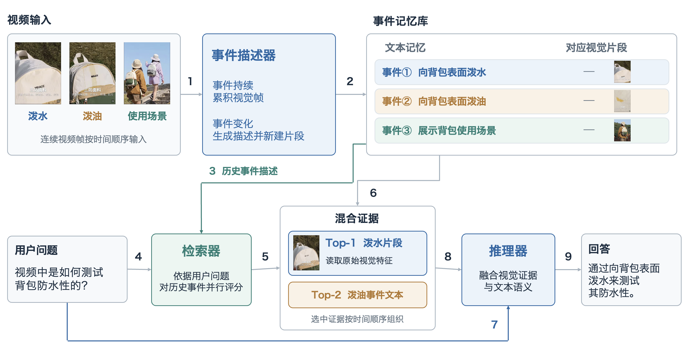

01 / CAPTIONER
Build event-level memory
Accumulate observations while an event continues. At a semantic boundary, close the segment and generate its description.
Event-level Memory and Retrieval-enhanced
Video Understanding
South China University of Technology
Streaming Video, Long Video, Event-level Memory and Segment, Visual Evidence Retrieval

Accumulate observations while an event continues. At a semantic boundary, close the segment and generate its description.
Score event descriptions against the question. Retrieve visual features for the top-k segments and text for the next k segments.
Arrange selected evidence chronologically and combine it with the question for multimodal reasoning.
Kairos-8B-V1 VS LLaVA-Video-7B-Qwen2 (128 frame)
Kairos-8B-V1 VS HERMES-7B
Mean TTFT · Kairos-8B-V1
Single NVIDIA H800
Video data for model pretraining
Reinforcement learning training data
The full backbone, sampling configuration, timing scope, and evaluation protocol will be documented with the research release.
Select a question to inspect its visual evidence. The example uses a backpack video featuring water, oil, and outdoor-use scenes.
The video shows water being poured onto the surface of the backpack.
Selected visual evidence: water scene. Auxiliary textual memory: oil scene.